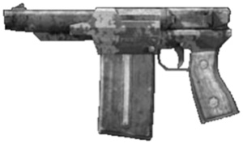

| Blunderbuss | ||
 | ||
|
||
| This weapon is a sawn off shotgun, with barrel reinforcement and CO2 cooled barrels so it may fire thermite rounds without damaging the barrels. |
| Fetcher Crossbow | ||
 | ||
|
||
| Damages : 3D6+2. Another fine crossbow, this one is fitted with a winch and comes with 5 barbed grapple arrows (+1D6). It also features a swing out knife blade on the buttstock as sort of a reverse bayonet. Weapon requiring a character with a min BODY of 7 to arm it. | ||
| Nomad Nuzi | ||
 | ||
|
||
| This Micro Uzi has been modified to the point it is no longer recognizable. | ||
| Nomad Scrapper | ||
|  | ||
|
||
| As full conversion cyborgs and other cybernetically enhanced or armored individuals are becoming slowly more prevalent in the nomad community, so is the necessity for weapons that will stop them. This hand made handgun fires the 5.56mm rifle round, which will not only take out even full conversions, but also makes a pretty good vehicle stopper. Unfortunately it's not very reliable and prone to jamming. |